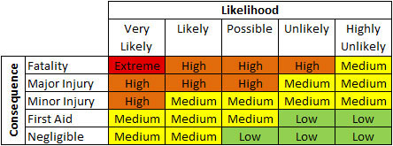
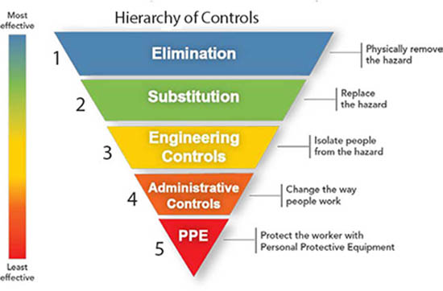

Element 3
Advise on
implementation of
control measures at
the building and
construction
workplace.
Workplace inspections
A example of a Site inspection report template is shown at Element 2 and the hazards of a construction site must be soroughly investigated and recorded in the template. Most companies have already made-up checklists for common hazards. The person doing the inspection should be familiar with two important issues:
Risk assessment requirements |
|
Risk Control Hierarchy |
| It is then necessary to evaluate the likelihood of an injury occurring, along with its probable consequences. Risk assessments are therefore based on two key factors: |
|
If a risk is foreseeable, you must eliminate it, or if that is not possible, you need to minimise it as much as possible
|
- the likely severity or impact of any injury or illness resulting from the hazard, and
- the probability or likelihood that the injury or illness will actually occur.
|
|
Risk control is a system used in the building industry to minimize or eliminate exposure to hazards. This concept is standard practice in the workplace. |
There are Five Steps to do a Risk Assessment
Make sure you follow these strps
- Identify the Hazard (refer to Step 1 above)
- Identify the Risk (refer to Step 2 above)
- Assess the Risk
- Control the Risk (refer to Risk Rating Matrix)
- Hierarchy of Controls refer to Risk Control Hierarchy
It is then necessary to evaluate the likelihood of an injury occurring, along with its probable consequences. Risk assessments are therefore based on two key factors:
- the likely severity or impact of any injury or illness resulting from the hazard, and
- the probability or likelihood that the injury or illness will actually occur.
A simple risk matrix, which cross references likelihood and impact, enables risk to be assessed against these two factors and identified as one of the following:
- a critical risk
- a high risk
- a moderate risk
- a low risk
- a very low risk.
|
|
| 1 |
Elimination of the hazard |
Examples include the proper disposal of redundant items of equipment that contain substances such as asbestos, or PCBs, the removal of excess quantities of chemicals accumulated over time in a laboratory, etc.
The elimination of a hazard is a 100% effective control measure. |
| 2 |
Substitution of the hazard |
Examples include the replacement of solvent-based printing inks with water-based ones, of asbestos insulation or fire-proofing with synthetic fibres or rockwool, the use of titanium dioxide white pigment instead of lead white, etc.
The effectiveness of this form of control is wholly dependent on the choice of replacement. |
| 3 |
Engineering Controls |
Examples include the installation of machine guards on hazardous equipment, the provision of local exhaust ventilation over a process area releasing noxious fumes, fitting a muffler on a noisy exhaust pipe, etc.
The effectiveness of engineering controls is generally around 70-90%. |
| 4 |
Administrative Controls |
Examples include training and education, job ation to share the load created by a demanding task or tasks, planning, scheduling certain jobs outside normal working hours to reduce general exposure (e.g. planning demolition and building works during summer recess), early reporting of signs and symptoms, instructions and warnings, etc.
The effectiveness of administrative controls generally ranges from 10-50%. they typically require significant resources to be maintained over long periods of time for continuing levels of effectiveness. They are also generally highly dependent on worker behaviour.rot
|
| 5 |
Personal Protective Equipment (PPE) |
Examples include safety glasses and goggles, earmuffs and earplugs, hard hats, toe capped footwear, gloves, respiratory protection, aprons, etc.
Their effectiveness generally does not exceed 20%. |
|
A simple risk matrix, which cross references likelihood and consequences, enables risk to be assessed against these two factors (see Figure 1)
Figure 1 Rating Matrix

The hazard controls in the hierarchy are, in order of decreasing effectiveness (see Figure 2)
Figure 2 Hierarchy of Cotrols

The Code of Practice "HOW TO MANAGE WORK
HEALTH AND SAFETY RISKS"
from Safe Work Australia provides Students with more information on this matter (you are free to copy, communicate and adapt the work for non commercial purposes.
|